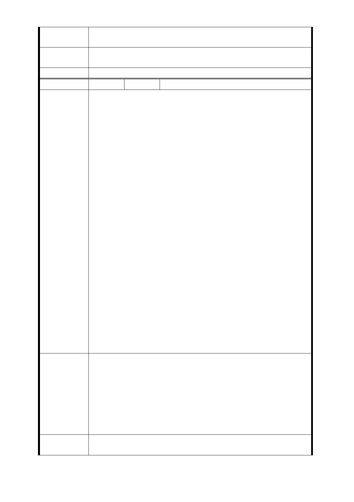

響其原有權益），還可與政府共同分享捷運聯合開發獎勵與都
市計畫獎勵的樓地板面積」之意旨，從優處理。
市府回應
意見
同編號捷五－1 回應意見。
委員會決議 同編號交一－1 委員會決議。
編 號 捷五-12 陳情人 謝○威、柴○芝
1. 上（11）月 30 日及本（12）月 7 日，臺北市府捷運工程
局與都市發展局先後於萬華，首度邀集此地計畫開發區（
捷）住戶，舉行聯合開發後所能返還地主之住宅面積試算
與相關說明，兩次均有此地住戶及立院與北市議會民代全
程在場與會聆聽。
2. 先就 11 月 30 日以編號「捷五」土地開發區（捷）內，某
地主住戶權狀面積－土地 10 坪、建物 39 坪為例，試算結
果，僅能換取 26.4 坪樓地板面積（內函 33％約 8.7 坪以
上公設），扣除公設後，室內實際僅有 17 坪餘大小；再就
12 月 7 日於同區以 10 坪土地為基準，試算結果，僅能換
得 27.6 坪，扣除同上例後之公設後，室內面積僅 18.5 坪
。綜上 2 次之試算結果，顯示開發後所能返還住屋之室內
陳情理由
面積，相較於各自現有者，均將平白損失逾半以上。由於
此舉衝擊嚴重，立時群情譁然，在場民代莫不同表無法接
受。
3. 「捷五」區內建物皆為 30 餘至 50 坪之四、五層樓公寓，
公設面積甚小。各戶室內面積約有 30 餘至 40 餘坪左右，
屋齡多在 25 年以內，屋況良好，環境亦佳。倘若本計畫
案未能考量社會公益與保障住戶固有權益，從而研採諸如
修、增訂相關法規或其它有效可行之措施與途徑，設法於
開發後返還大小相若之公道室內坪數，以行救濟。則住戶
勢將因所獲居住面積過小，無法容納原有戶口入住（三代
同堂，口數較多者尤然），以致難以配合，無法接受，實
係可受社會檢視與公評之事。各方均宜以三贏（政府機關
、地方交通與建設、土地開發區（捷）住宅區居民三者）
的智慧，共謀良策，營造榮景。
1. 現代社會，政府施政故應講求法治，亦須兼顧情理，正所
謂：「徒法不能以自行。」建請從速修增訂本案相關法規
，使之與時俱進，切合時宜實需，以確保「捷五」住宅區
建議辦法
住戶之固有權益。
2. 「捷五」佔地廣達 3,148 平方公尺，遠逾車站所需。建議
縮減「捷五」範圍，降低衝擊影響。
3. 將「捷五」及「LG03」車站改設他處公有地。並以此建議
辦法優先考慮之。
市府回應
意見
同編號捷五－1 回應意見。
- 62 -